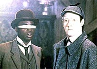
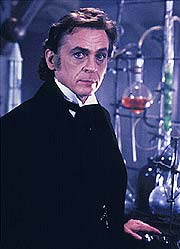
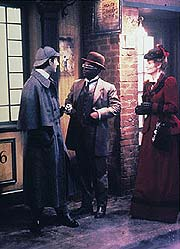
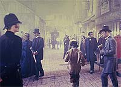
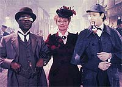

|
MANCHETE
DO EPISÓDIO
Envolvente
aventura de holodeck tenta
dar mais status à condição de Data
Episódio
anterior | Próximo
episódio
Sinopse:
Data Estelar: 42286.3.
A Enterprise chega com três dias de antecedência para se encontrar
com a USS Victory. Por conta disso, a tripulação acaba ganhando um
tempo livre. Sabendo que Data é um aficionado por Sherlock Holmes,
Geordi o convida a ir ao holodeck, onde eles viajam de volta à
Londres vitoriana para resolver um dos famosos mistérios do
detetive. Geordi interpreta Watson, e Data, Holmes, mas a aventura
acaba sendo abreviada --tendo memorizado todos os livros de Arthur
Conan Doyle, Data é capaz de resolver o caso sem nenhum esforço.
 O engenheiro sai
intempestivamente do holodeck, rumo ao bar panorâmico. Lá, ele
tenta explicar a Data a diferença entre dedução e memorização.
a doutora Kate Pulaski ouve a conversa e desafia Data a resolver um
crime real, no estilo de Sherlock Holmes. Geordi ordena que o
computador crie um mistério original e um oponente capaz de
derrotar o andróide.
Kate se une a Data e Geordi, de volta a Londres, via holodeck. Mas o
jogo começa a ficar perigosos quando a médica é raptada pelo
arquiinimigo de Holmes, o professor James Moriarty. Embora a dupla
consiga localizar o paradeiro da doutora, eles são incapazes de
resgatá-la porque Moriarty tem o controle sobre o computador da
Enterprise.
Dara e Geordi deixam o holodeck e revelam à tripulação sobre a
situação. Eles descobrem que o computador não criou um adversário
à altura da inteligência de Holmes, mas da de Data --o que
significa que Moriarty é mais do que brilhante: ele adquiriu consciência.
Picard insiste em voltar para o holodeck com Data para resgatar
Pulaski.
 Data leva
seu capitão até Moriarty, que ainda mantém a doutora como refém.
Embora Data ofereça conceder a vitória a seu inimigo para concluir
o programa, Moriarty quer mais. Ele quer deixar o holodeck e
tornar-se real. Por sorte, Picard é capaz de convencê-lo de que
ainda não existe tecnologia capaz de dar realidade material a
personagens criados artificialmente pelo holodeck, prometendo salvar
seu programa e restaurá-lo assim que os meios apropriados tenham
sido inventados. Moriarty aceita a proposta e liberta a doutora.
Comentários:
"Elementary,
Dear Data" é tão saboroso quanto um mistério de Sherlock
Holmes --com a vantagem de ganharmos, de uma vez só, não só o
famoso detetive britânico como também um andróide do século 24.
De quebra, nos defrontamos com um dos hologramas mais carismáticos
da série.
 A idéia toda é
usar a trama para convencer a audiência de que Data é uma forma de
vida. Em princípio, o episódio até consegue fazer isso, porque os
fatos são interpretados arbitrariamente para que essa mensagem seja
transmitida. Parece muito simples: para algum personagem de holodeck
derrotar Data, ele precisa ter capacidades iguais às de Data. Se o
personagem adquiriu consciência, logo Data é um ser consciente.
O detalhe que ninguém questionou é que talvez Moriarty continue tão
artificial quanto os outros personagens do holodeck. Aliás, as
regras não costumam ser as mesmas o tempo todo, quando estamos
falando do mecanismo holográfico preferido da turma da Nova Geração.
Todos se surpreendem quando Moriarty é capaz de ver e chamar o
"arco", mas ninguém se incomoda que a senhora que está
com ele também consiga ver o "arco" e o classifique como
bruxaria. O que diferencia a senhora de Moriarty? Seguramente, não
é uma "consciência", mas a personalidade (artificial ou
não) de cada um deles.
Ninguém garante que o arquiinimigo de Holmes tenha de fato
adquirido consciência. Ele apenas parece ter conquistado essa condição
por ser capaz de compreender a verdadeira natureza do ambiente em
que ele vive e a real identidade de Data e Geordi. É até um pouco
exagerado que ele consiga controle do computador e conecte suas
engenhocas holográficas aos sistemas da nave, fazendo-a chacoalhar,
mas perdoamos esses detalhes pelo incrível entretenimento
proporcionado pelo episódio.
 De
qualquer forma, questionar a consciência de Moriarty (ou mesmo de
Data, ou de qualquer outro personagem holográfico) recai em uma
questão mais filosófica do que técnica. Parecer ser é ser de
fato? Se você perguntar a Alan Turing, um matemático que estudou a
questão décadas atrás, a resposta é sim --uma vez que não somos
capazes de "experimentar" a consciência alheia, o fato de
algo parecer consciente já é suficiente para resolver a questão.
A discussão dá pano para a manga, mas o episódio não se propõe
a oferecer uma resposta objetiva a isso. Ele apenas faz com que os
personagens dêem uma de Turing e aceitem as aparências como
reflexo direto de uma realidade. Resolvida essa questão, passamos
ao que mais interessa neste roteiro: a aventura.
É muito divertido ver Data e Geordi interagindo como Holmes e
Watson. Aliás, a amizade dos dois foi muito bem construída ao
longo da série, e com certeza este episódio figura como um dos
tijolos mais importantes desse relacionamento. Também é bem
utilizado o antagonismo entre Data e a sempre cética Kate Pulaski,
a força que leva esse episódio a frente, com o desafio para o andróide.
 Moriarty é
excepcionalmente bem construído, nem tanto pelo roteiro, mas pela
brilhante e carismática atuação de Daniel Davis. O personagem,
que mostra grande potencial para tornar-se um recorrente, voltaria a
aparecer na série apenas mais uma vez, no sexto ano, para fechar a
história iniciada aqui.
Finalmente, "Elementary, Dear Data" se destaca pela
impressionante reconstituição da Londres vitoriana, não tanto
pelo aspecto histórico, mas mais ainda pelo estilo Sherlockiano dos
cenários e do ambiente londrino. Não fosse o visor de Geordi e a
pela dourada de Data, um telespectador desatento trocando de canal
poderia muito bem ser fisgado ao pensar estar vendo uma obra 100%
baseada na saga criada por sir Arthur Conan Doyle.
O tema "inteligência artificial" é por demais espinhoso,
o que acaba gerando, volta e meia, interpretações simplistas para
que ele possa ser adaptado em episódios de televisão. Mais a
frente, em "The Measure of a Man",
teremos um belíssimo tratado sobre o tema, como raras vezes pudemos
observar em uma série de ficção científica. Por ora, o destaque
fica para o carisma e para o zelo técnico que permeia este episódio.
Citações:
Pulaski - "Thank
you for the tea and crumpets. I guess I'll be going."
("Obrigado pelo chá e pelos bolinhos. Eu acho que vou
indo.")
Trivia:
 Anne Elizabeth Ramsay, vista aqui como a engenheira Clancy,
reaparece no episódio "The Emissary", desta mesma
temporada, porém como uma oficial da ponte de comando, e alferes.
Anne Elizabeth Ramsay, vista aqui como a engenheira Clancy,
reaparece no episódio "The Emissary", desta mesma
temporada, porém como uma oficial da ponte de comando, e alferes.
O personagem de Sherlock Holmes não voltará a aparecer na Nova
Geração, devido a problemas legais que a Paramount acabou
enfrentando junto aos herdeiros de Arthur Conan Doyle, o criador do
personagem.
Ficha
técnica:
Escrito por Brian Alan Lane
Direção de Rob Bowman
Exibido em 05/12/1988
Produção: 029
Elenco:
Patrick Stewart como
Jean-Luc Picard
Jonathan Frakes como William Thomas Riker
Brent Spiner como Data
LeVar Burton como Geordi La Forge
Michael Dorn como Worf
Marina Sirtis como Deanna Troi
Wil Wheaton como Wesley Crusher
Elenco convidado:
Diana Muldaur como
Katherine "Kate" Pulaski
Daniel Davis como Moriarty
Alan Shearman como Lestrade
Biff Manard como Ruffian
Diz White como uma prostituta
Anne Elizabeth Ramsay como Clancy
Richard Merson como "pie man"
Episódio
anterior | Próximo
episódio
|